18.12.2019.
Slikanje, snimanje?
Iza ove grupe ne stoji nikakva rma (iako je Kristijan osnovao Meetup i ima rmu)
Okupljamo se da radimo na zanimljivim i novim stvarima, zatim to prezentiramo
elite prezentirati neto vezano za IT to prua neku vrijednost ostalima? Dobrodoli.
Ako imate ideje, trebate pomo na nekom vaem podruju - javite se, bacite poruku na Facebook grupu, poaljite poruku nekome od nas - vrlo je vjerojatno da vam moemo dati savijet, pomoi ili vas makar usmjeriti prema ljudima koji znaju kako to rijeiti
Dugoroni cilj: oformljavanje grupa koja rjeava tekue probleme ljudi
Najjednostavnija definicija: kronoloki niz vrijednosti
Zapravo sve to se moe promatrati sekvencijalno tijekom vremena
Najpoznatiji primjeri:
Tono predvianje vremenskog niza je vrlo korisno jer omoguava poduzimanje pravovremenih mjera kako bi proces kojeg vremenski niz predstavlja bio to efikasniji
Proizvoai elektrine energije ele to bolje predvidjeti koliko e se u nekom razdoblju potroiti struje
Kod rezervacija hotelskih soba je cilj prodati sobe po najviim cijena ovisno o tritu, odnosno ponudi i potranji
Podaci predstavljaju rezervacije soba za X hotela vodee Hrvatske tvrtke kroz tri godine
Podaci su organizirati tako da se rezervacije promatraju samo za neki odreeni dan (npr. 1.7.)
Zapravo, da bi se rezervacija ukljuila u promatrani skup, boravino vrijeme gosta mora ukljuivati promatrani datum
Napomena: jedna rezervacija moe ukljuivati vie soba, to je zapravo podatak koji se promatra
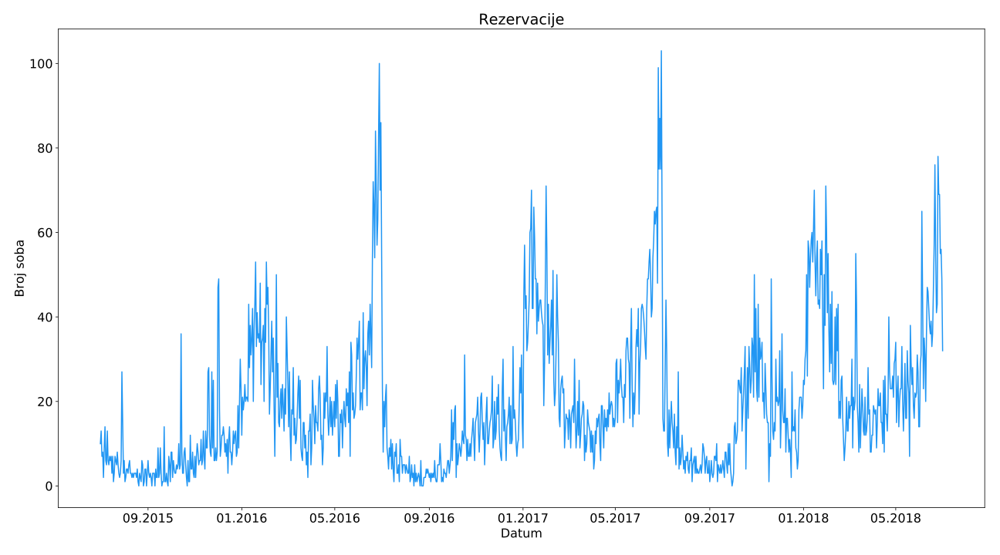
Konkretan zahtjev tvrtke: previanje rezervacija 60, 30 i 7 dana unatrag od promatranog datuma
Ako promatramo datum 1.7., predvianja e se raditi na datume 2.5., 1.6. i 24.7. sa dotada prikupljenim podacima.
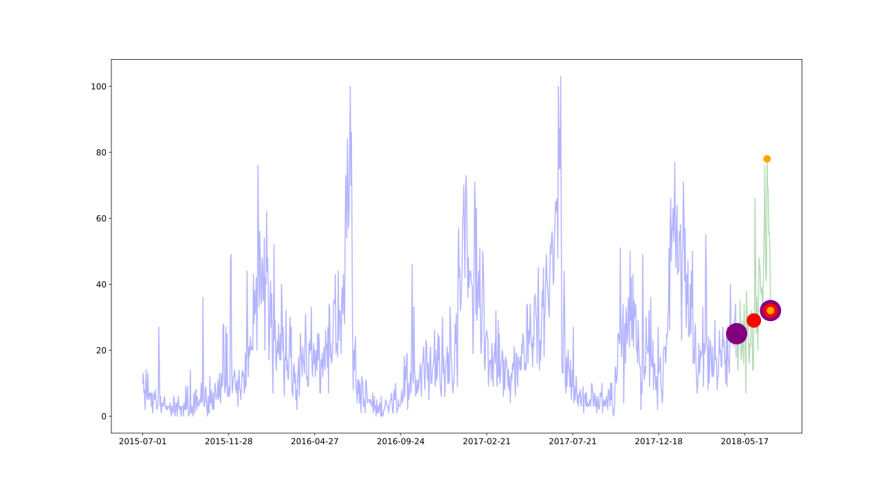
Moe se prepoznati kada postoji dugorono poveanje ili smanjenje u podacima
U veini sluajeva jasno uoljiv, ali kada nije odmah uoljiv, to ne daje naznaku da trend ne postoji
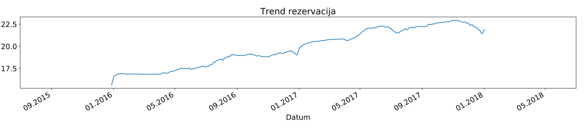
Nastaje kada na vremenski niz utjeu sezonalni imbenici kao to su doba godine ili dan u tjednu
Uvijek ima fiksnu ili poznatu uestalost, odnosno frekvenciju
U primjeru vremenskog niza rezervacija jasno se moe vidjeti da postoji godinja sezonalnost
Pojavljuje se kada se u podacima pojavljuju porast ili pad koji nisu fiksne uestalosti, odnosno frekvencije.
Obino posljedica ekonomskih uvjeta i estu su povezana sa poslovnim ciklusom
Ciklinost je slina sezonalnosti u aspektu periodinog ponavljanja uzorka, dok je razliita u aspektu frekvencije, odnosno sezonalnost ima fiksnu frekvenciju dok ciklinost nema
Nema slike :)
Mean Absolute Error (MAE):
Forecasting Attainment (FA):
{ "01.01.2019.": 1, "01.02.2019.": 2, "01.03.2019.": 2, "01.04.2019.": 3, "01.05.2019.": 2, }
Za vremenski okvir y0,,yny_0,\dots, y_ny0,,yn predvia yn+1y_{n+1}yn+1
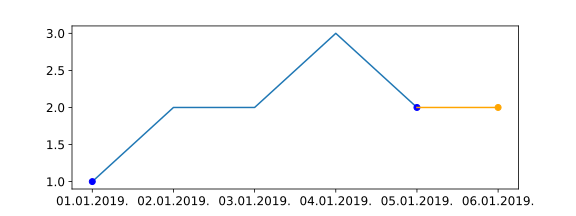
Za vremenski okvir y0,,yny_0,\dots, y_ny0,,yn iterativnim koritenjem jednokorane metode predvia yn+1,,yn+ky_{n+1,\dots, y_{n+k}}yn+1,,yn+k
Postoji mnogo razliitih metoda modeliranja vremenskih nizova
Odabir pravog modela nije jednostavan
esto se kod analize vremenskih nizova testira vie razliitih modela i promatraju njihove performanse
Naive, AR, MA, ARIMA, Prophet, NN
Najjednostavnija izvedba naivnog modela: za predvianje uzima posljednja dostupna vrijednost
yt=yt1y_t = y_{t-1}yt=yt1
Metoda radi izuzetno dobro za mnogo ekonomskih i financijskih vremenskih nizova
Za predvianje se moe iskoristiti vrijednost iz prole sezone u istom trenutku
Npr. za predvianje vrijednosti za dan 1.7.2019. moe se koristiti vrijednost na dan 1.7.2018.
yt=ytmy_t = y_{t-m}yt=ytm, gdje je mmm trajanje sezonalnog razdoblja
Autokorelacija je blisko vezana sa korelacijom
Kao to korelacija mjeri opseg linearnog odnosa izmeu dvije varijable, tako autokorelacija mjeri linearni odnos izmeu prethodnih vrijednosti vremenskog niza
Moe se izraunati prema prethodnim vrijednostima koje se zovu vremenski pomaci (engl. lags)
Prikaz autokorelacije vremenskog niza prema vremenskom pomaku zove se AutoCorrelation Function (ACF)
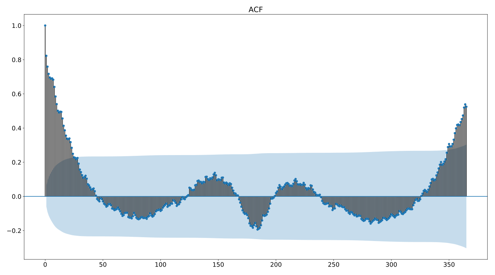
Autokorelacija za promatranu vrijednost i vrijednost u nekom prethodnom koraku se sastoji od direktne korelacije i indirektne korelacije
yt3y_{t-3}yt3 ima indirektnu korelaciju sa yt2y_{t-2}yt2 koji ima indirektnu korelaciju sa korakom yt1y_{t-1}yt1 koji ima direktnu korelaciju sa yty_tyt
Parcijalna autokorelacija eli ukloniti indirektne korelacije kako bi se mogla izraunati samo direktna korelacija izmeu yty_tyt i ytky_{t-k}ytk gdje kkk vremenski pomak
Prikaz parcijalne autokorelacije vremenskog niza prema vremenskom pomaku zove se Partial AutoCorrelation Function (PACF)
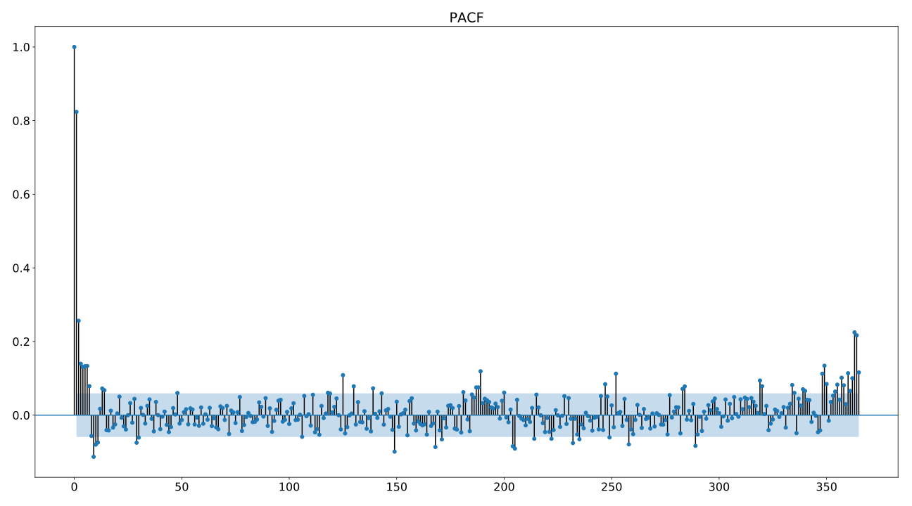
Vremenski niz koji nema autokorelaciju
Kada je vremenski niz bijeli um, autokorelacija e biti blizu 000 i 95%95\%95% vrijednosti autokorelacije e biti unutar granica ACF prikaza
Kod vremenskog niza rezervacija moe se primijetiti da nije bijeli um jer:
postoji znaajna autokorelacija do vremenskog pomaka 25
vie od 5%5\%5% vrijednosti je izvan granice ACF prikaza
Iako nije daleko da bude samo um, onda nastavak prezentacije nema smisla
Vremenski niz se sastoji od tri komponente:
trend-ciklinost
sezonalnosti
preostalo (sadri ostatak vremenskog niza)
Stacionarni vremenski niz je onaj ija svojstva ne ovise o vremenu u kojem se vremenski niz promatra
Provjera stacionarnosti je nuna kod izgradnje statistikog predikcijskog modela
Ispitivanje kroz Augmented Dickey and Fuller (ADF) test
p-value > 0.05: prihvaa se hipotezada niz nije stacionaran
p-value <= 0.05: odbacuje se hipoteza da niz nije stacionaran
Ako niz nije stacionaran potrebno je napraviti potrebne transformacije (npr. diferenciranje)
Diferenciranje izvrava transformaciju podataka izraunavajui razlike izmeu uzastopnih opservacija
Diferenciranje moe pomoi stabilizirati srednju vrijednost vremenskog niza
yt2=yt3yt4y_{t-2} = y_{t-3} - y_{t-4}yt2=yt3yt4 yt1=yt2yt3y_{t-1} = y_{t-2} - y_{t-3}yt1=yt2yt3 yt=yt1yt2y_{t} = y_{t-1} - y_{t-2}yt=yt1yt2
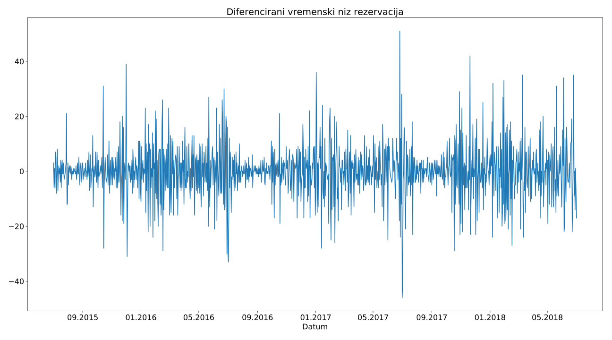
ADF test za primjer rezervacija iznosi 0.00130.00130.0013
Prihvaa se hipoteza da je vremenski niz stacionaran
Nije potrebno izvriti nikakvu transformaciju
U autoregresivnim modelima predviamo eljenu varijablu koristei linearnu kombinaciju njenih prethodnih vrijednosti
Pojam autoregresija ukazuje da je to regresija varijable sa samom sobom
yt=c+1yt1+2yt2++pytp+ty_t=c+\phi_1y_{t-1}+\phi_2y_{t-2}+\ldots+\phi_py_{t-p}+\epsilon_tyt=c+1yt1+2yt2++pytp+t, gdje je ccc konstanta, 1,,p\phi_1,\ldots,\phi_p1,,p su parametri vremenskih pomaka yt1,.ytpy_{t-1},\ldots.y_{t-p}yt1,.ytp, a t\epsilon_tt opisuje bijeli um
model = AR(9)
Koriste greke dobivene previanjem varijable u prolosti, time dobivajui model slian regresijskom modelu
yt=c+t+1t1+2t2++qtqy_t = c + \epsilon_t + \theta_1 \epsilon_{t-1} + \theta_2 \epsilon_{t-2} + \ldots + \theta_q \epsilon_{t-q}yt=c+t+1t1+2t2++qtq, gdje je ccc konstanta, t\epsilon_tt opisuje bijeli um, 1,,q\theta1,\ldots,\theta_q1,,q su parametri greaka t1,,tq\epsilon_{t-1},\ldots,\epsilon_{t-q}t1,,tq predvianja vremenskih pomaka, modela razine qqq
model = MA(25)
Kombinacija diferenciranja, autoregresijskih modela i modela pominih prosjeka
yt=c+1yt1++pytp+1t1++qtq+ty_t' = c + \phi_1 y_{t-1}' + \ldots + \phi_p y_{t-p}' + \theta_1 \epsilon_{t-1} + \ldots + \theta_q \epsilon_{t-q} + \epsilon_tyt=c+1yt1++pytp+1t1++qtq+t, gdje je yty_t'yt diferencirani niz koji moe biti diferenciran vie puta
Formula definira ARIMA(p, d, q) model autoregresivnog dijela razine p, dijela pominih prosjeka razine q i stupnja diferenciranja d
model = ARIMA(9, 0, 25)
Generalizirani ARIMA model koji moe raditi sa sezonalnim vremenskim nizovima
Formiran ukljuivanjem dodatnih sezonskih izraza u ARIMA model
ARIMA(p,d,q,)(P,D,Q)m, gdje je m broj opservacija godinje
Zbog jednostavnosti i smanjivanja potrebe za ogromnim resursima prilikom treniranja koristiti e se model ARIMA(1,0,1)(1,0,1)
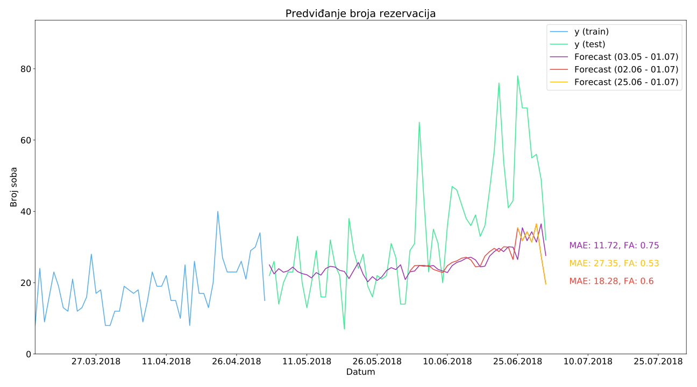
Razvio Facebook u svrhu predvianja kretanja razliitih vremenskih nizova:
Koristi dekompozicijski model vremenskih nizova sa tri glavne komponente: trend, sezonalnost i praznici
y(t)=g(t)+s(t)+h(t)+ty(t) = g(t) + s(t) + h(t) + \epsilon_ty(t)=g(t)+s(t)+h(t)+t
Znaajnije prednosti:
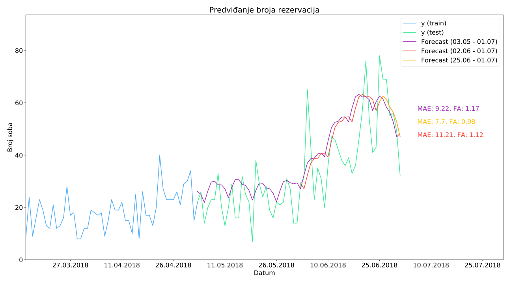
Neuronske mree (engl. Neural Network - NN) su trenutno moda i najpoznatija tehnika strojnog uenja
Ve uspjeno primijenjene na probleme prepoznavanja slika, prepoznavanja govora, pretvaranja teksta u govor, a u novije vrijeme neuronske mree su sposobne i generirati novi sadraj (slika, tekst, zvuk)
Good news: mogu se koristiti i za modele vremenskih nizova
Najpoznatija i najjednostavnija vrsta neuronske mree
U MLP-u su svi neuroni sloja povezani sa svim neuronima sljedeeg sloja (engl. fully connected)
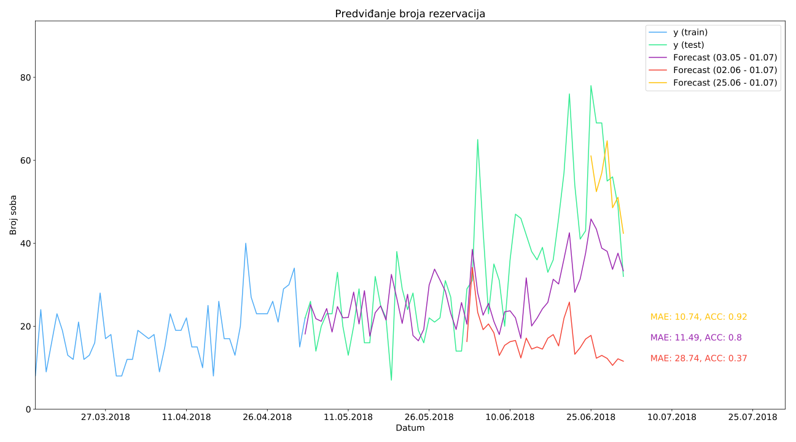
CNN su mree specijalizirane za obradu podataka oblika reetke
Slike su idealan primjer takve strukture podataka, dok se tu mogu uvrstiti i vremenski nizovi koji se mogu promatrati kao jednodimenzionalni podaci
Glavna prednosti CNN-a je mogunost izvlaenja glavnih znaajki kroz konvolucijske slojeve bez prethodne analize i pripreme podataka, ve e one biti nauene kroz treniranje
Sposobnost mree da naui prepoznavati ponovljene obrasce u vremenskom nizu, koje dalje moe koristiti za predvianje buduih vrijednosti
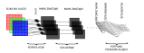
Vrsta neuronske mree koja je specijalizirana za obradu sekvencijskih nizova
Omoguavaju obradu puno duih nizova nego to bi to bilo mogue sa neuronskim mreama koje nisu specijalizirane za obradu sekvencijskih nizova
RNN sadri sakrivena stanja koja su distribuirana kroz vrijeme, to omoguava spremanje mnogo informacija o prolosti
Izlaz ovisi o trenutnom ulazu, prethodnim ulazima, prethodnim izlazima i/ili skrivenim stanjima unutar mree
Dvije poznate implementacije: LSTM i GRU
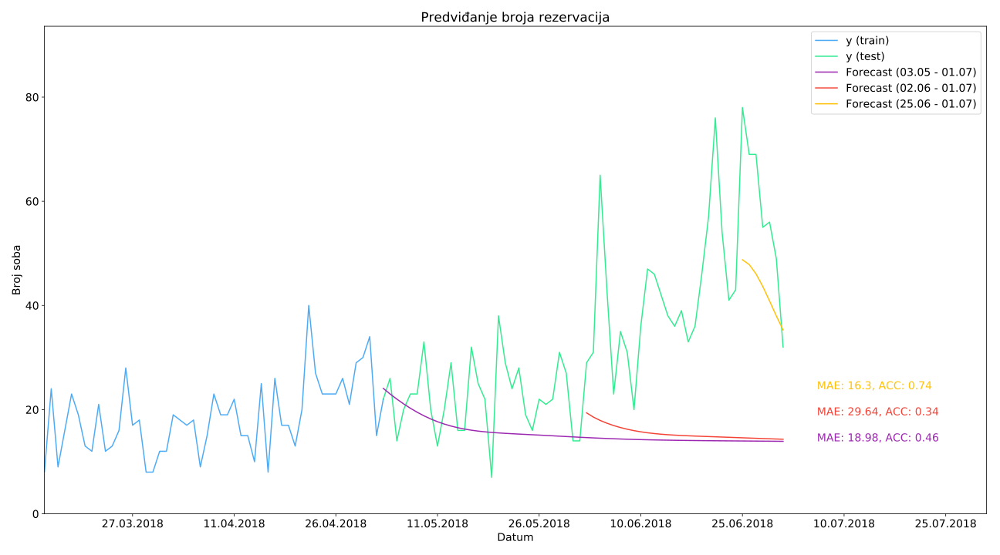
Neuronska mrea koja se trenira da kopira ulaz u izlaz
Sastoji od dvije komponente: encoder koji enkodira podatke i decoder koji rekonstruira podatke
Najpoznatiji nain izvedbe autoencoder-a je mrea sa slojem izmeu dvije komponente (encoder i decoder) koji ima manje dimenzije nego ulazni podaci
Ideja je blisko vezana sa PCA (engl. Principal Component Analysis)
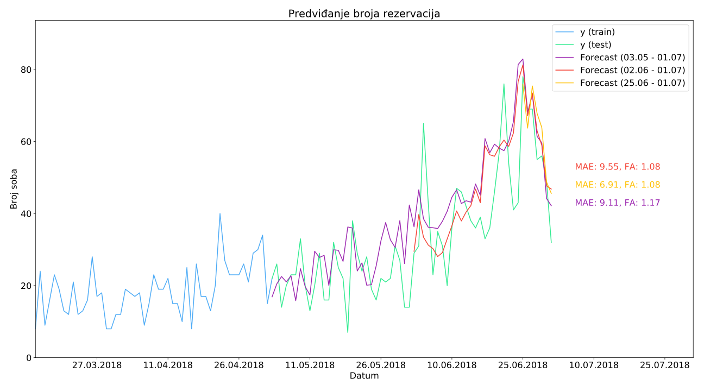
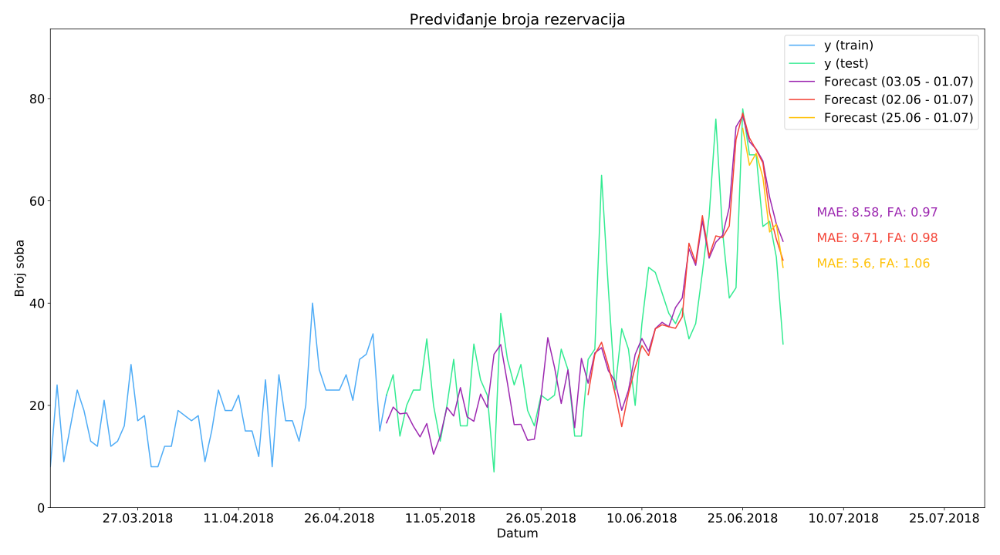